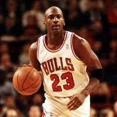

Michael Jordan

Michael Jordan is a former professional basketball player from the United States, considered by many to be the greatest basketball players of all time. He was born Michael Jeffrey Jordan on February 17th, 1963 in Brooklyn, New York, His dad James R. Jordan, Sr., an equipment supervisor. Michael was the fourth child of five born to his parents, and has two older brothers, an older and a younger sister. He attended Emsley A. Laney High School in Wilmington, North Carolina, where his family had relocated to when he was just a toddler. Although he played sports in school, he was actually turned down for the varsity basketball team in his sophomore year for being too short. A four inch growth spurt and training changed all that. Michael Jordan Led the Chicago Bulls to six NBA championships (1991, 1992, 1993, 1996, 1997, 1998).Five-time NBA Most Valuable Player and six-time NBA Finals MVP. Played 15 NBA seasons in total 13 with the Chicago Bulls (1984-1985 through 1992-1993, then 1994-1995 through 1997-1998) and two season with the Washington Wizards (2001-2002 and 2002-2003). Has enjoyed lucrative endorsement deals with Nike, Hanes, Gatorade, Upper Deck and others
Back